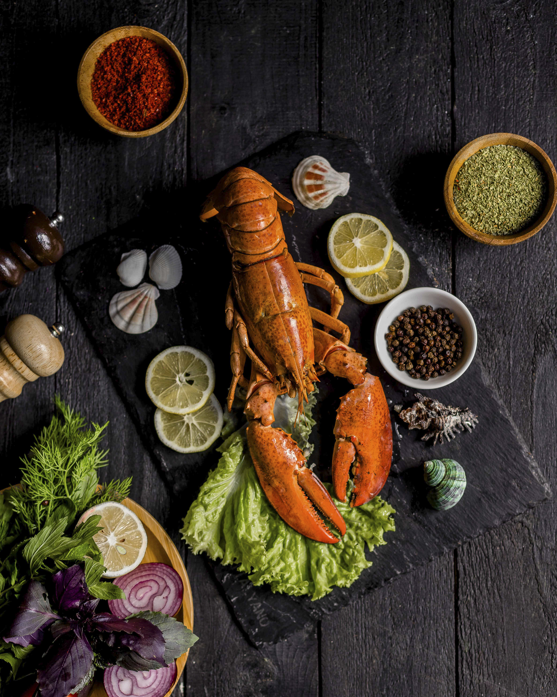

Lobster recipe
Description
These lobster tails cooked in the air fryer are incredibly tender and delicious.
Topped with a melted buttery garlic herb sauce, this is a quick and easy way to have that delectable fancy dinner without a lot of time and preparation!
Ingredients
- 4 lobster tails
- salt and pepper
- 3 garlic cloves minced
- 1 teaspoon rosemary minced
Steps
- Preheat the oven to broil or 500 degrees. Start by preparing the lobster. Using kitchen shears butterfly the tail by cutting down the center.
- In a small bowl whisk together the melted butter, garlic, paprika, thyme, rosemary, and parsley.
- Broil the lobster for about 8-10 minutes or until the meat is opaque and lightly brown on the top.
- Salt and pepper the meat and set on a baking sheet.